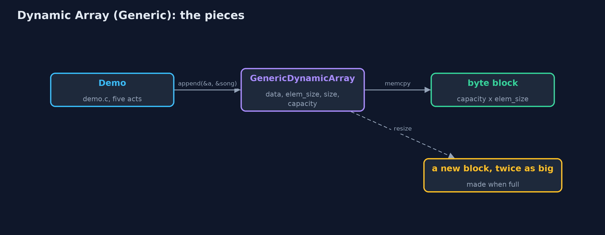
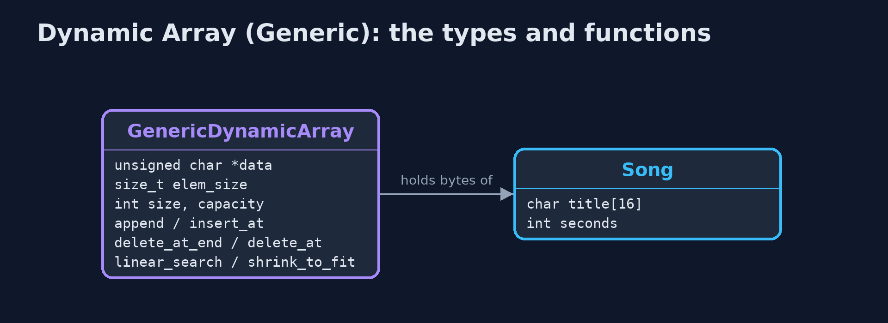
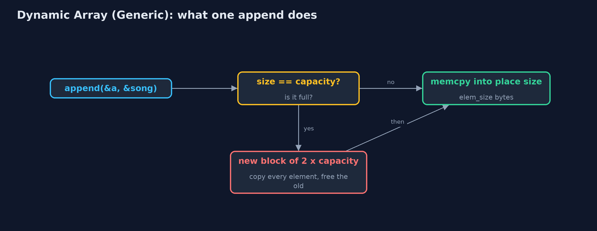
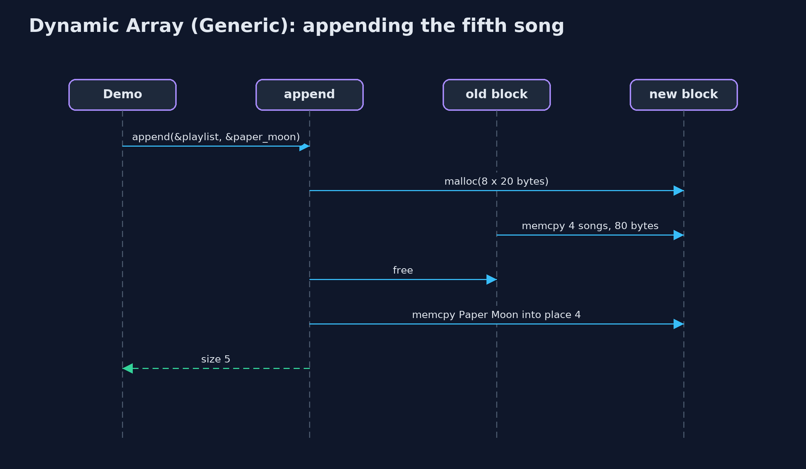

Dynamic Array (Generic)
A generic dynamic array in C is a block of bytes with an element size, a size and a capacity: appending copies elem_size bytes into the next place, a full block is replaced by one twice as big with every element's bytes copied across, and comparisons go through a function pointer; the costs are those of any dynamic array.

A GenericDynamicArray of Songs: 20 bytes each, size 5, capacity 8
A generic dynamic array is the dynamic-array project written once for any element type, the way C's standard library handles any type. The array is a block of bytes with an element size, elem_size, a size (elements in use) and a capacity (places in the block). Element i starts at data + i x elem_size. Appending copies elem_size bytes into the next place with **memcpy; when the block is full, a new block of twice the capacity is allocated, every element's bytes are copied across, and the old block is freed. When deletions leave it a quarter full, it is halved. Searching takes a comparison function**. Every cost is that of the dynamic-array project; what changes is that the array knows only sizes, never types.
New to data structures? Read Start here first: it explains memory, pointers and counting steps in ten minutes.
The everyday idea
Picture moving house with boxes: the removals firm does not need to know what is in the boxes, only that every box is the same size, 20 centimetres, say. When the van is full, the firm brings one twice as big and carries every box across. To find "the box with the Echoes record", the firm asks you, the person who knows what is inside, to check each box.
The worked example: A playlist of Song structs, beside the same code holding titles and play counts
The music app's playlist holds Song structs, each a title and a length in seconds, 20 bytes per song. The same code also holds the titles as char * pointers and the play counts as ints. The demo grows the playlist until it resizes, inserts an intro, deletes a song, searches with a comparison function, deletes from the end, shrinks to fit, and measures a thousand appends.
Why it exists
A playlist of songs, a list of titles and a list of play counts should not need three copies of the dynamic-array code. With a byte block, an element size and comparison functions, one implementation serves every type. It is how C code builds growable containers, and it is what realloc makes cheap to write.
New words
| Word | What it means here |
|---|---|
| elem_size | Bytes per element, from sizeof: 20 for a Song, 4 for an int, 8 for a pointer on a 64-bit machine. |
| size and capacity | Elements in use, and places in the block. |
| resize | A new block of a different capacity, with every element's bytes copied across and the old block freed. |
| memcpy | Copies a number of bytes from one place to another, whatever they mean. |
| comparison function | int compare(const void *a, const void *b): zero when the two elements are equal. |
| amortised O(1) | The average cost of an append, counting the rare resize: about one copy per append. |
What you will see, act by act
Run the demo and it tells the story in 5 acts; make test checks that it still prints exactly tests/expected-output.txt:
make run| Act | What it shows |
|---|---|
| 1. One array type, any element type | The same code holds char * titles, int play counts and Song structs, with element sizes of 8, 4 and 20 bytes. |
| 2. Full? Double it, copying bytes | Appending Paper Moon to a full block of 4 songs makes a block of 8 and copies 4 songs, 80 bytes; 9 songs end at capacity 16. |
| 3. The middle, and comparison functions | insert_at(0, Intro) shifts 9 songs; delete_at(5) shifts 4; compare_song finds Echoes (3:21) at index 6 after 7 comparisons, but not Echoes (3:20). |
| 4. Deleting, and giving memory back | 16 places, 9 in use; delete_at_end copies the last song out to the caller; shrink_to_fit copies 8 songs into exactly 8 places. |
| 5. The bill | 1,000 appends copy 1,020 elements, about one each; deleting down to 256 of 1,024 halves the capacity; the costs equal the char * version's. |
Each act is drawn step by step in the explained walkthrough and in the animation.
The operations, and what they cost
Time is given for the best, average and worst case in Big-O notation (START-HERE.md explains it by counting steps); the last column is what that costs in the worked example, as the demo prints it.
| Operation | What it does | Time: best / average / worst | Extra space | In the example |
|---|---|---|---|---|
| Traverse | Print each element with a print function | O(n) / O(n) / O(n) | O(1) | one call per element |
| Access / update | memcpy elem_size bytes at data + i x elem_size | O(1) / O(1) / O(1) | O(1) | 1 step |
Insert at end append | memcpy into place size; double first when full | O(1) / O(1) amortised / O(n) when it resizes | O(1) amortised; O(n) for the new block during a resize | 1,020 elements copied over 1,000 appends |
| Resize (inside append) | A new block of twice the capacity, every element's bytes copied | O(n) / O(n) / O(n), but rare | O(n) | 4 songs, 80 bytes, at the 5th song |
Insert insert_at | Shift elements pos..size-1 right, memcpy the new one in | O(1) at the end / O(n) / O(n) at the front | O(1), plus a resize when full | 9 shifts at the front of 9 songs |
Delete at end delete_at_end | Copy the last element out; halve when a quarter full | O(1) / O(1) amortised / O(n) when it shrinks | O(1) amortised | 0 shifts |
Delete delete_at | Copy the element out, shift the later ones left | O(1) at the end / O(n) / O(n) at the front | O(1) | 4 shifts to delete index 5 of 10 |
| Linear search | compare(element i, key) for each i in turn | O(1) / O(n) / O(n) | O(1) | 7 comparisons to find Echoes |
| Shrink to fit | Resize to exactly size places | O(n) / O(n) / O(n) | O(n) | 8 songs copied |
Extra space is the memory an operation needs besides the structure itself. A loop needs a fixed amount, O(1); a recursive operation needs one call-stack frame for every call still waiting, so its extra space is the depth of the recursion.
The operations in code
Resize: copying bytes
/** A new block of new_capacity elements; the bytes of every element copied; the old block freed. O(n). */
static Status resize(GenericDynamicArray *a, int new_capacity) {
unsigned char *new_data = malloc((size_t) (new_capacity > 0 ? new_capacity : 1) * a->elem_size);
if (new_data == NULL) {
return STATUS_NO_MEMORY;
}
for (int i = 0; i < a->size; i++) {
memcpy(new_data + (size_t) i * a->elem_size, element_at(a, i), a->elem_size);
}
free(a->data);
a->data = new_data;
a->capacity = new_capacity;
return STATUS_OK;
}A new block of new_capacity x elem_size bytes, each element's bytes copied with memcpy, and the old block freed. The array never knows whether it is copying songs, numbers or pointers.
Insertion at the end
/** Insertion at the end: copy elem into place size, doubling first when full. O(1) amortised. */
Status append(GenericDynamicArray *a, const void *elem) {
if (a->size == a->capacity) {
Status s = resize(a, a->capacity == 0 ? 1 : a->capacity * 2);
if (s != STATUS_OK) {
return s;
}
}
memcpy(element_at(a, a->size), elem, a->elem_size);
a->size++;
return STATUS_OK;
}If size == capacity the block is full, so it is replaced by one twice as big first; then elem_size bytes are copied into place size. Most appends are one memcpy; the rare one that resizes costs O(n).
Linear search with a comparison function
/** Linear search: the first index whose element compares equal to key, or -1. O(n). */
int linear_search(const GenericDynamicArray *a, const void *key, CompareFn compare) {
for (int i = 0; i < a->size; i++) {
if (compare(element_at(a, i), key) == 0) {
return i;
}
}
return -1;
}compare(element_at(a, i), key) == 0 asks the function passed in whether two elements are equal. compare_song compares the title with strcmp and then the length, so a song of the same title but a different length is a different song.
Compared with related structures
The generic dynamic array against its neighbours (n elements):
| Property | Generic dynamic array | Dynamic array of char * | Generic static array |
|---|---|---|---|
| Element types | any, given its size | char * only | any, given its size |
| Access element i | O(1) | O(1) | O(1) |
| Append | O(1) amortised | O(1) amortised | overflow when full |
| Insert or delete at the front | O(n) shifts | O(n) shifts | O(n) shifts |
| Moves elements with | memcpy of elem_size bytes | pointer assignment | memcpy |
| Type checked by the compiler | no: void * | yes | no: void * |
The code
src/
├── demo.c Tells the story of the generic dynamic array in five acts
├── elements.c Comparison and print functions: the only code that knows what the elements really are
├── elements.h The element types of the demo, and the comparison and print functions for each
├── generic_dynamic_array.c The generic dynamic array's operations: the dynamic array's, moving elem_size bytes at a time
└── generic_dynamic_array.h A dynamic array (a resizable array) of any element type: a block of bytes with an element size, replaced by a block twice as big when it is full
tests/
├── check.c The test harness's counters, and main: runs the tests and reports
├── check.h A tiny test harness: RUN(test) runs one test function, CHECK(condition) records a failure
└── test_generic_dynamic_array.c Every behaviour the generic dynamic array must have, for more than one element typeBuild and test
make test8 tests in test_generic_dynamic_array.c, and the demo's whole output compared with tests/expected-output.txt, so every number the docs quote is checked. Nothing depends on the clock, so every run gives the same result.
Common mistakes
| The mistake | What goes wrong | The fix |
|---|---|---|
| The wrong element size | Elements overlap or are cut short, and neighbours overwrite each other. | Pass sizeof of the element type itself: create(&a, sizeof(Song)). |
| Keeping a pointer into the block across an append | A resize moves every element to a new block and frees the old one: the pointer now points at freed memory. | Keep indexes, not pointers, or fetch the address again after every append. |
| Forgetting to free the old block in a resize | Every resize leaks the old block. | free it after copying, as resize does, or use realloc, which does both. |
| Growing by a fixed amount | Appending near the limit copies everything each time: about n squared over 2 copies. | Grow by a factor: double, or one and a half. |
Try it yourself
- Easy. Write
int contains(const GenericDynamicArray *a, const void *key, CompareFn compare)usinglinear_search. What does it return forSong {"Echoes", 201}on the demo's playlist, and why? - Medium. Write
int delete_by_key(GenericDynamicArray *a, const void *key, CompareFn compare), deleting the first element equal tokey. What does it cost? - Harder. Rewrite
resizeusingrealloc. What canreallocdo that the copying loop cannot, and what must you be careful of when it fails?
The answers are in docs/exercises.md, below the questions, so they are not given away.
When to use it
- A growing list of values of one type, in C, where the type varies from use to use.
- Mostly appending at the end and reading by index.
When not to
- Only one element type is ever needed: the typed version is simpler and checked by the compiler.
- Frequent insertion and deletion at the front: every element shifts; use a linked list or a deque.
Where you have already met this
reallocgrowing a buffer in any C program.- Java's
ArrayList<E>and C++'sstd::vector<T>, the typed equivalents in other languages.
Technologies and versions
| Technology | Version | Used for |
|---|---|---|
| C | C17 | the code, compiled with -std=c17 -Wall -Wextra -Wpedantic -Werror -O0 -g |
| Compiler | Apple clang version 14.0.3 (clang-1403.0.22.14.1) | any C17 compiler works; the Makefile uses cc |
| make | the system make | build, run and test: make run, make test |
| Tests | a hand-written harness, tests/check.h | no test library needed |
| videokit | course tool | the narrated video and animation: Piper en_US-amy-medium, speed 0.8, longer pauses (the amy-slow voice) |
Learning material
| Document | What it is for |
|---|---|
| Start here | the ideas every project relies on |
| Problem statement | the situation and what the project must show |
| Prerequisites | what you need to know first |
| Dynamic Array (Generic), explained | every act, picture by picture |
| Animated walkthrough | the structure changing step by step, narrated |
| Cheat sheet | the whole structure on one page |
| Exercises and answers | practice, easy to harder |
| Session guide | a one-hour lesson |
| Specification | what this project must be true of |
How the pieces fit
The demo appends Songs; the array copies their bytes and grows its block when full.

The types and functions
GenericDynamicArray knows only bytes; Song is one element type.

How the data moves
Copy into a spare place, or resize first.

Who calls whom, in order
The block is full, so the append allocates, copies 80 bytes, frees, then copies the new song in.

Video
video/dynamic-array-generic-explained.mp4 (with .m4a audio and .srt subtitles) is built by video/build_video.sh. Rendered media is not committed.
Where this sits
Part of the data structures course, in arrays-and-lists.